What We Do
Northern California Attractions is a website highlighting all the special places there are to visit in Northern California. Whether you are adventurous and looking for extreme mountain biking trails or more of a bookworm looking for a more sedate historial adventure, we are here to provide you with all the unique travel destinations to put on your "to-do" list.
We are in the business of helping everyone find their good time!
Photo Gallery
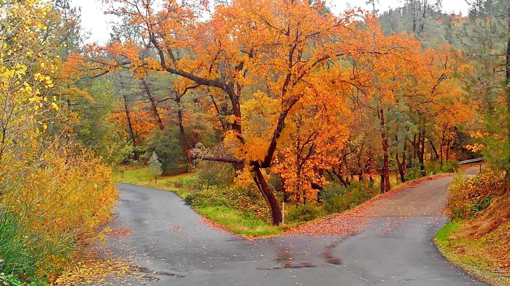
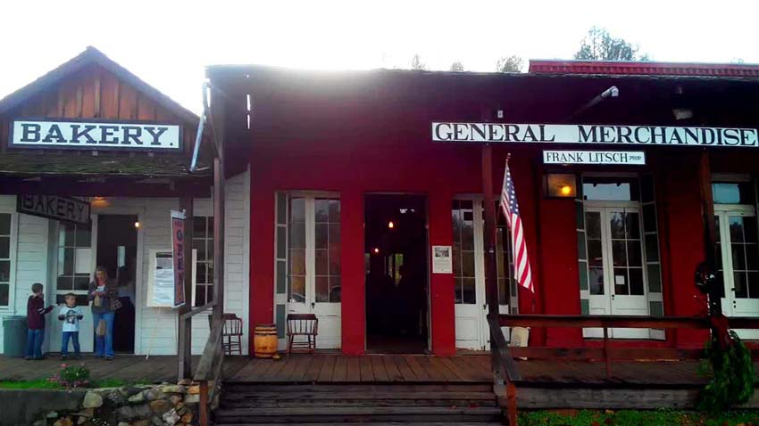
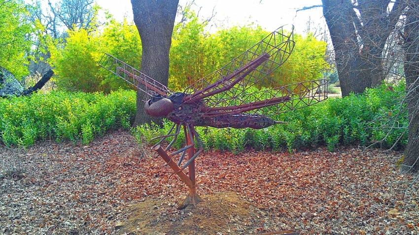
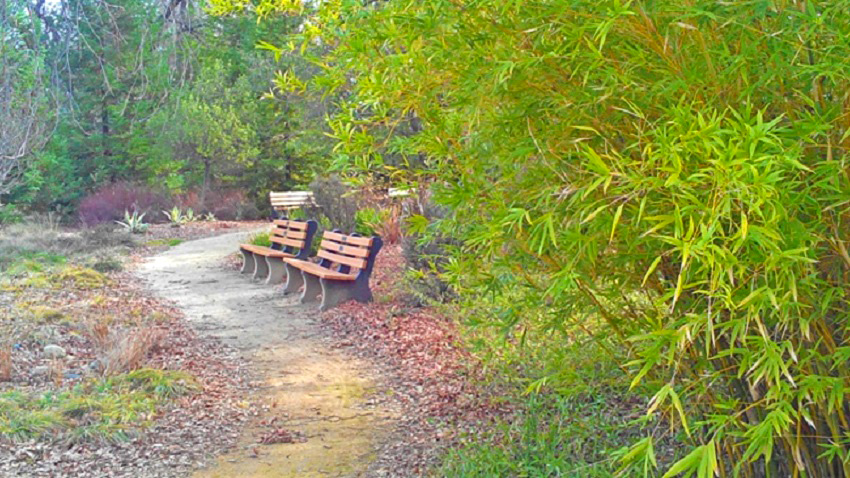
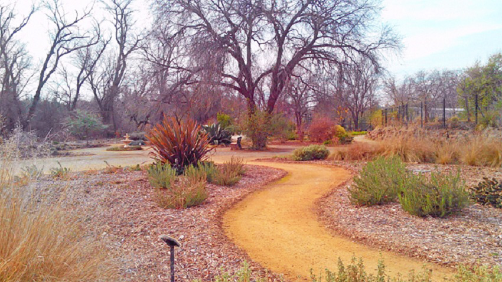
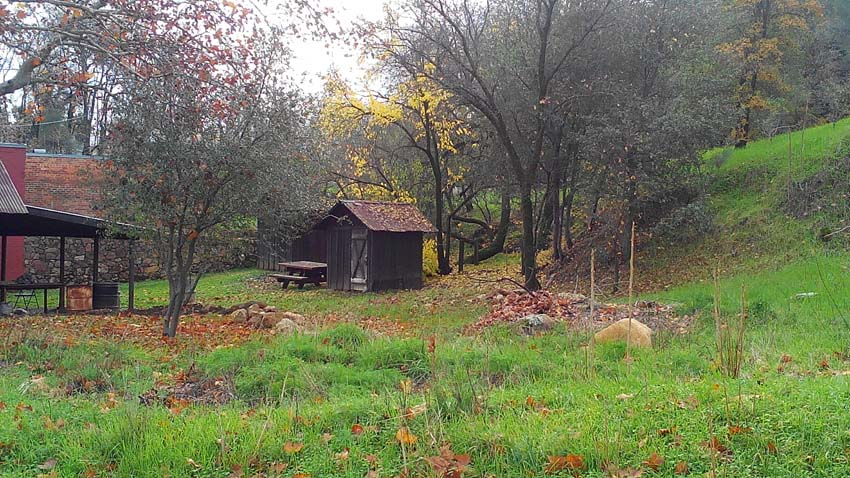
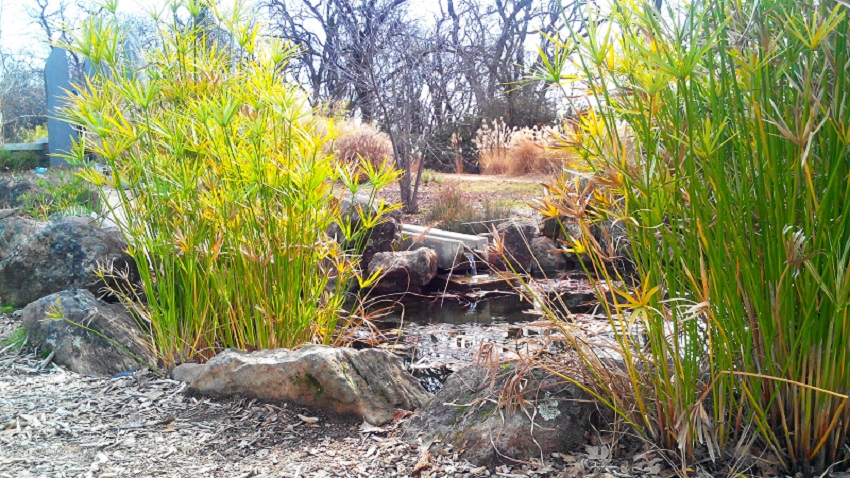
 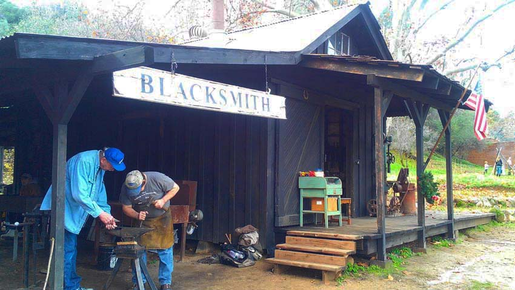
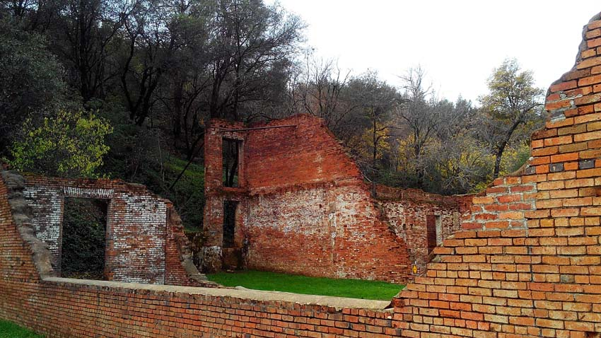
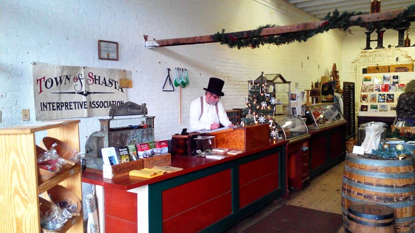
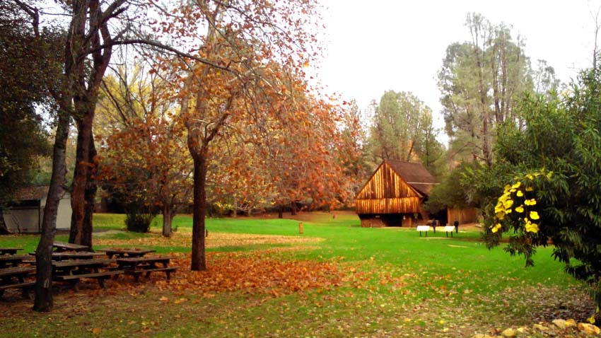
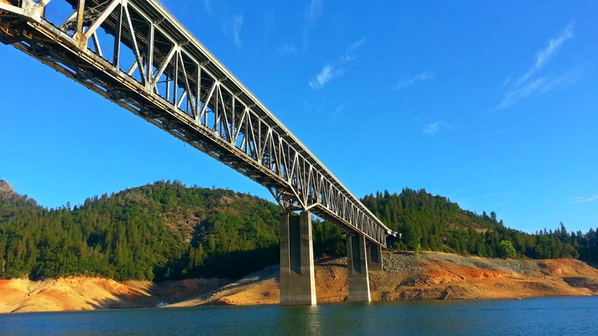
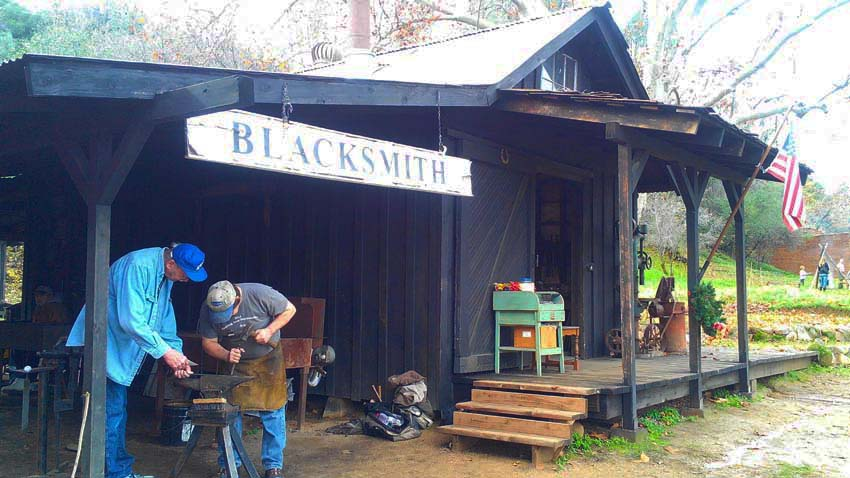
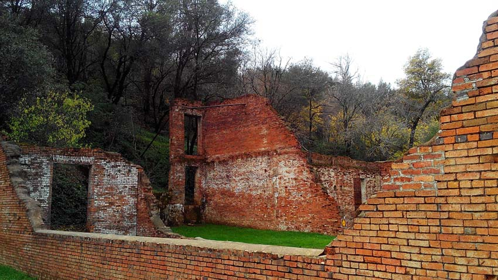
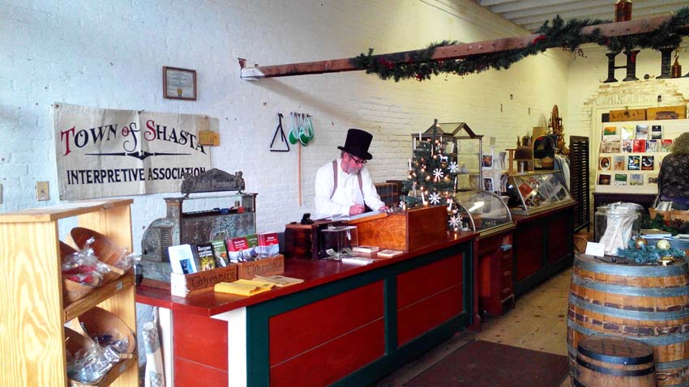
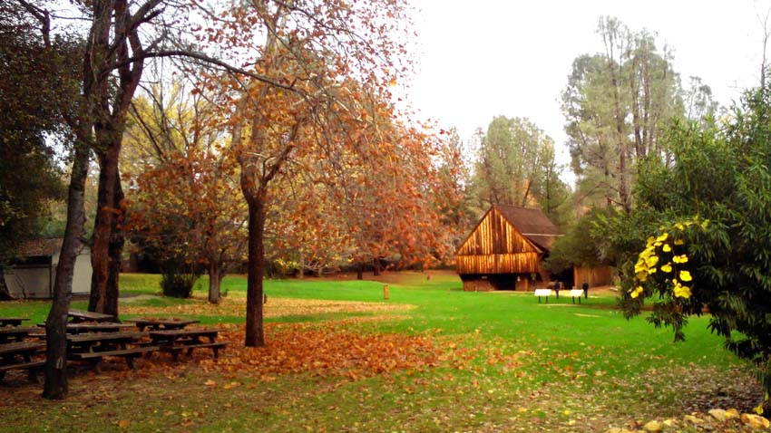
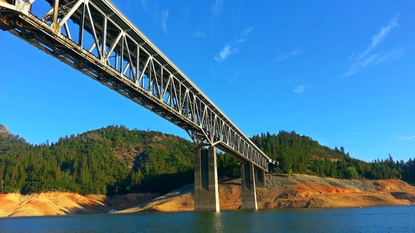
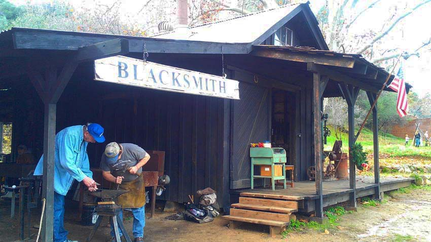
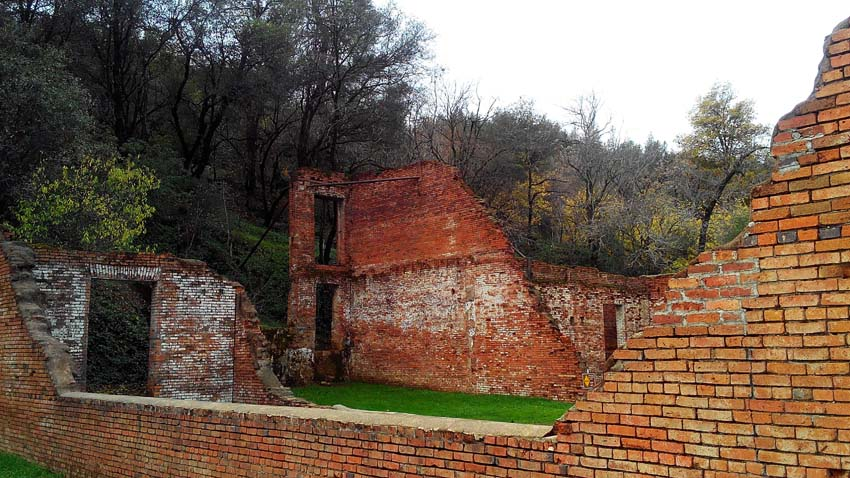
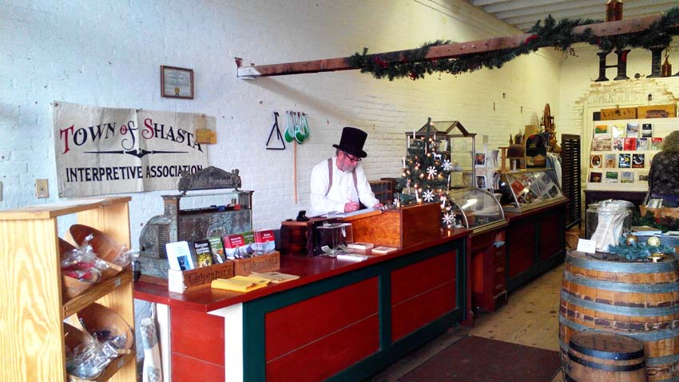
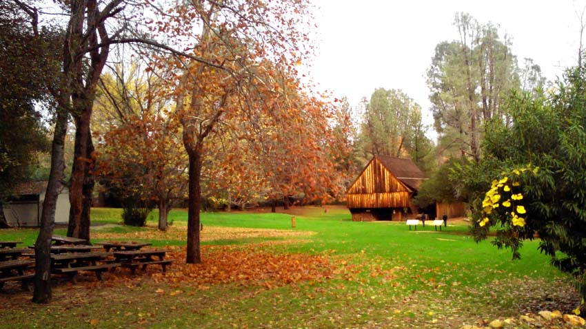
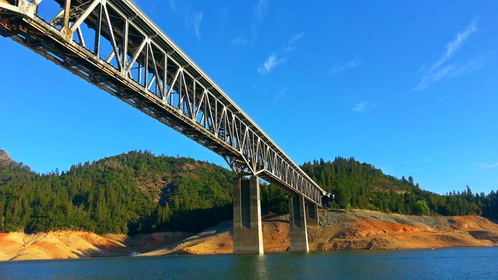